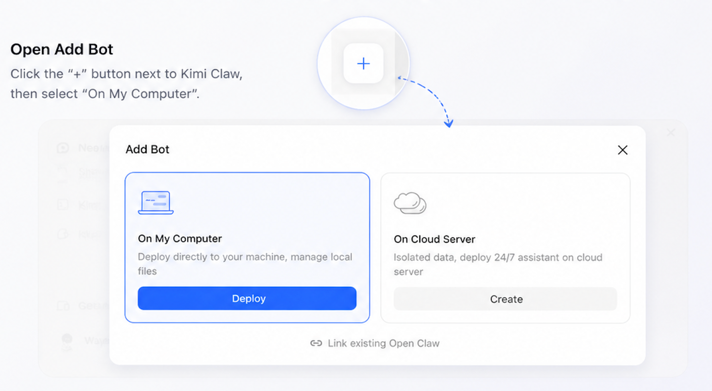
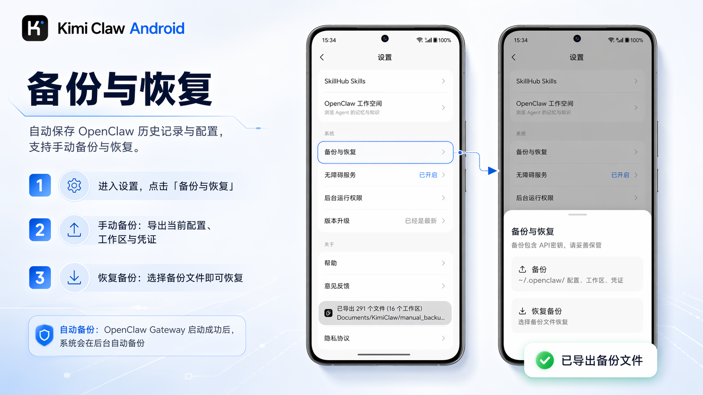

KimiClaw 迭代观察：从本地终端到云端协作的一条暗线
从功能碎片还原产品演进脉络——为什么一个开源 Agent 框架会被 Kimi 生态收编，又为什么它始终不放弃本地优先这条底线。
现状：现在这版是什么样
我最近从KimiClaw官网了解到它的桌面端，打开 Kimi 桌面应用的侧边栏就能看到它——点一下"部署到我的电脑"，一分多钟后，本地 OpenClaw Gateway 就在 ~/.openclaw/ 目录里跑起来了，自动配上 Kimi K2.6 模型额度，连 ClawHub 技能库都给接好了。
这体验很顺，但我总觉得哪里不对。
一个被 Kimi 收编的开源 Agent，为什么花这么大力气在做"本地化部署"？为什么同时存在云端版、桌面端、Android 端三条独立路径？为什么"关联已有 OpenClaw"这个功能——把你手上已经跑起来的实例接进来，而不是强制你用云端重新建一个——会被放在 kimi.com/bot 页面的显著位置？
这些问题在样本文档里没有直接答案，但把几份文档的功能碎片拼起来，能看到一条挺清晰的演进暗线。

来路：从独立 OpenClaw 到 Kimi 生态的三次转向
样本文档没给版本号，也没给发布时间线。但功能之间的依赖关系本身就是时间轴——先有什么，后有什么，从谁取代谁，能反推出来。
第一阶段：纯本地 OpenClaw，开源终端工具
最早的 OpenClaw 应该是个纯命令行的东西。样本文档里保留了大量 / 开头的命令——/memory 查记忆、/config reload 重载配置、/debug on 开调试——这套命令体系明显是从纯终端时代带过来的遗产。
那时候它就是个能本地跑的 Agent Gateway，模型自己配、技能自己装、数据全在本地。没有云端，没有 App，没有群聊协作。定位很朴素：给技术用户一个能跑在自己机器上的 AI Agent。
第二阶段：被 Kimi 收编，云端部署上线
转折点出现在 Kimi 入局之后。样本文档里"云端部署"章节讲的就是这个阶段的产物——在 kimi.com/bot 页面点"创建 Kimi Claw"，系统会在 Kimi 云端虚拟机上给你开一个，自动配好 Kimi K2.6 模型，7×24 在线。
这一步让 OpenClaw 从"技术玩具"变成了"可被普通用户使用的云端服务"。代价也很明显：需要 Allegretto 会员、数据全在云端、模型额度走 Kimi 的计费体系。
第三阶段：本地化回归，多端并行
然后就有意思了——Kimi 没有把 OpenClaw 的本地路线废掉，反而同时在推三条路：
- 桌面端一键部署：Kimi 桌面应用里点一下，或者直接从官方下载拿安装包手动装，OpenClaw 就在本地跑起来，模型额度还是走会员，但数据归自己
- Android 终端：把 OpenClaw Gateway 直接装进手机，开机自启，还能自动备份记忆
- 关联已有实例：如果你已经有本地 OpenClaw 跑着，装个插件就能接进 Kimi 网页端/群聊，记忆人设一个不丢
这三条加在一起，实际上是在给用户一个选择权：你要 7×24 在线？用云端版。你要数据归自己、跑在自己电脑或手机上？用本地版。你已经在别处把它养熟了？接进来就行。
这个选择空间在同类产品里不多见——大多数平台要么全云端（Slack Bot、飞书机器人那种模式），要么全本地（传统开源 Agent 框架）。KimiClaw 是少数同时押两头的。
规律：从迭代节奏看团队在死磕什么
把功能按时间线排一遍，几个优先级就显出来了。
死磕的一：渠道接入，让 Agent 不局限在网页里
样本文档里有飞书接入（/feishu start、/feishu doctor）、企业微信接入（/wecom doctor）、还有微信相关的配置截图。群聊场景下，KimiClaw 可以被拉进 Worker 列表，和其他 Claw 协作。
这套设计的信号很明确：团队不想让 KimiClaw 变成一个只能在 kimi.com 网页里用的"孤岛 Agent"。它要能出现在你日常沟通的地方——飞书群、企业微信群——在那边接收指令、执行任务。
死磕的二：记忆与调试，给重度用户留后门
/memory search <关键词>、/memory export、/logs、/debug on——这套命令在KimiClaw文档里有完整说明，明显是给重度用户准备的。当定时任务没执行、技能报错、飞书机器人失联时，用户可以自己一步步排查，不用等客服。
Android 版还暴露了 OpenClaw 工作空间：AGENTS.md（人设定义）、HEARTBEAT.md（定时任务）、IDENTITY.md（身份标识）三个核心配置文件，用户可以直接用文本编辑器改。
这跟"普通用户产品"的思路不太一样——普通产品会把这些藏起来，怕用户弄坏。KimiClaw 反而主动暴露。这说明团队心里很清楚：它的核心用户里，有相当比例是愿意折腾、愿意自己调配置的人。
一直没太管的：早期历史的文档化
样本文档里最早的 OpenClaw 长什么样、第一个版本是哪天发的、Kimi 是什么时候开始合作的——这些信息完全没有。这不像是"没来得及写"，更像是团队刻意不想花精力回溯过去。他们的注意力明显在当前功能和未来路线上，对"产品史"这种东西没兴趣。
预判：照这个路线，下一步大概率是什么
以下是从迭代规律推的，不是官方口径。
第一，渠道接入会继续扩
飞书、企业微信、微信都接了，下一步大概率是钉钉、Telegram、Discord。渠道铺得越全，KimiClaw 作为"通用 Agent 平台"的定位就越稳。
第二，本地优先这条线会继续强化
Android 版的自动备份和恢复、桌面端的一键部署、关联已有实例——这几个功能串起来看，团队在给"数据归属用户"这件事下注。如果云端版和本地版的能力差距继续缩小，会有更多用户选择本地部署。
第三，SkillHub 技能生态会越来越重要
样本文档里 Android 版已经内置了 SkillHub 入口——下拉选择 Skill、一键安装。如果 ClawHub 技能库能做起来，KimiClaw 的壁垒就从"Agent 框架"变成了"Agent 平台"——用户不需要自己写技能，装上就能用。
但 SkillHub 能不能做起来还不好说。技能生态需要开发者，开发者需要激励，目前文档里没看到激励机制的设计。
写在最后
我其实还没搞清楚 Kimi 为什么要做这件事——把一个开源 Agent 框架收编进来，花力气同时推云端和本地两条线，还给用户选择权。这在商业上不像是一个"最聪明"的决策。
但从用户的角度看，这种"不强制、给选择"的姿态本身就是价值。样本文档里那张 Android 备份界面的截图让我印象挺深——自动备份、手动备份、恢复到任意历史状态——一个连记忆都能备份的 Agent，至少不会因为平台策略变化就让你的"数字人格"突然消失。
这可能才是 KimiClaw 这条路线真正吸引人的地方：它想让你觉得，这个 Agent 是你的，不是平台的。对了，这套 OpenClaw 框架本身是开源的，我平时也会去 GitHub 看最新的 issue 和 PR，国内网络不稳的时候就翻一下 Gitee，有时候新特性的讨论在 GitCode 上更新得更快。
